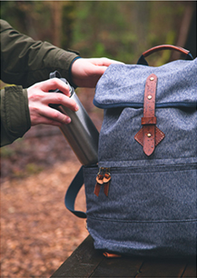
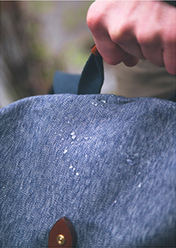
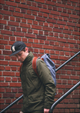
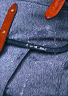
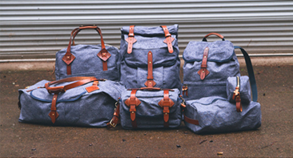

VOYAGER DAYPACK
NAVY SALT & PEPPER
Whether you’re stomping around outdoors or traversing the city, our Voyager Daypack was designed to be adaptable in
all environments. Compact, lightweight and a comfortable for people of all sizes.
FILLER
DRIFTER DOPP KIT
NAVY SALT & PEPPER
NAVY SALT
Field-tested from the peaks of the Cascades down to the desert floor of Joshua Tree, the Wilderness Rucksack was built to put on some serious miles for years to come. A comfortable, dependable combination of 14oz Salt & Pepper canvas, premium wool felt, and Cambara English bridle leather.
FILLER
TANNER COLLECTIONS
NAVY SALT & PEPPER
01
 SPRUCE SALT & PEPPER
We designed our Nomad Duffle as a versatile yet rugged piece of luggage that's just as comfortable outdoors as it is in an overhead compartment
READ MORE >02
NOMAD DUFFLE
This bag can be carried by hand, worn as a backpack or slung over a shoulder depending on your traveling needs.
READ MORE >03
 FIELD CAMERA BAG
Our field camera bag is constructed from 14oz Salt & Pepper canvas and Cambara Meridian English bridle leather. We've put these bags through the ringer in testing and we think you'll approve of the result. Our Camera Bag is fully lined and padded, and features an adjustable shoulder strap and pad, as well as two interior flap pockets for smaller gear and film.
READ MORE >VOYAGER DAYPACK
FILLER